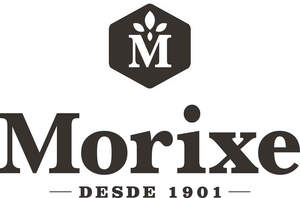

Trade Mark Journal No.2025/026 27 June 2025
UK00004216784 10 June 2025 (29,30)

International priority date claimed: 29 May 2025
(European Union Intellectual Property Office (EUIPO))
(019195485)
- Class 29
- Meat; fish; poultry; game; meat extracts; preserved, frozen, dried and cooked fruits and vegetables, legumes and pulses; jellies, jams, compotes; eggs; milk, cheese, butter, yoghurt and other dairy products; edible oils and fats; soups and broths; vegetable extracts for cooking [juices]; tomato purée; concentrated tomato; canned tomatoes; peeled tomatoes; processed tomatoes; edible gelatins not being confectionery; fruit peels; fruit spreads; canned fruit; prepared fruit; dried fruit; mixtures of fruit and nuts; fruit paste spreads; mincemeat [preserved fruit]; fruit jams; preserved fruit; crystallised fruits; fruit pulp; flavoured fruit; cooked fruit; frozen fruit; jarred sliced fruit; fruit marmalades; snack mixes consisting of dried fruits and processed nuts; pickled fruits; fruit-based dips; culinary fruit juice; pickled vegetables; peeled vegetables; prepared vegetables; processed vegetables; vegetable, legume and pulse salads; vegetable-based snack foods; vegetable purée; roasted vegetables and legumes; chopped vegetables and legumes; preserved vegetables, legumes and pulses in oil; canned chopped vegetables, legumes and pulses; canned vegetables, legumes and pulses [preserved]; preserved vegetables; freeze-dried vegetables, legumes and pulses; dried vegetables, legumes and pulses; jellies, jams, compotes, fruit and vegetable spreads; dairy products; potato crisps; cooked olives; mashed potatoes; chicken nuggets; frozen fish.
- Class 30
- Cocoa; chocolate; flan; fruit gelatins [confectionery]; pastry mixes; cookie mixes; pudding mixes; prepared baking mixes; cake mixes; mixes for making ice cream products; ice cream powders; baking powders; powders for making ice cream; powders for pastry and confectionery; pudding powders; prepared desserts [cakes]; brownie mixes; cake preparation mixes; powdered puddings; flour; breadcrumbs; balsamic vinegar; coffee; tea; rice; dry and fresh pasta, noodles and dough for dumplings; tapioca; sago; preparations made from cereals; bread; pastry and confectionery products; ice cream; sugar; honey; molasses syrup; yeast; baking powder; salt; seasoning products; spices; preserved herbs; vinegar; sauces; salts, dressings, condiments and seasonings; ice; coating mixes.
Morixe Hermanos S.A.C.I.
Representative: Bryers Intellectual Property Ltd